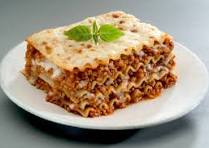

Lasagna recipe

Lasagna is a classic Italian dish that layers sheets of pasta with rich meat sauce, creamy béchamel, and melted cheese to create a hearty and comforting meal. The base typically consists of a slow-cooked meat sauce made with ground beef or sausage, onions, garlic, tomatoes, and herbs like oregano and basil. The sauce is layered between wide, flat lasagna noodles, along with béchamel sauce or ricotta cheese, which adds creaminess to balance the bold flavors of the meat and tomato.
What makes lasagna truly special is its versatility. While the traditional recipe is widely loved, there are countless variations to suit different tastes. From vegetarian versions loaded with spinach and mushrooms to rich alternatives using chicken or seafood, lasagna offers endless possibilities.
Ingredients
- Lasagna noodles
- Ground beef
- Onion
- Garlic
- Crushed tomatoes
- Tomato paste
- Olive oil
- Mozzarella cheese
Steps
- In a large skillet, heat olive oil over medium heat. Add chopped onions and sauté until translucent.
- While the sauce is simmering, cook the lasagna noodles according to package instructions until al dente. Drain and rinse with cold water to prevent sticking
- In a bowl, combine ricotta cheese, beaten egg (if using), salt, and black pepper. Mix well until smooth.
- Preheat your oven to 375°F (190°C).
- Cover the baking dish with aluminum foil (to prevent sticking, you can spray the foil with cooking spray). Bake for 25 minutes, then remove the foil and bake for an additional 15-20 minutes, or until the cheese is bubbly and golden.
- Let the lasagna cool for about 10-15 minutes before slicing. Garnish with chopped parsley if desired and serve hot.